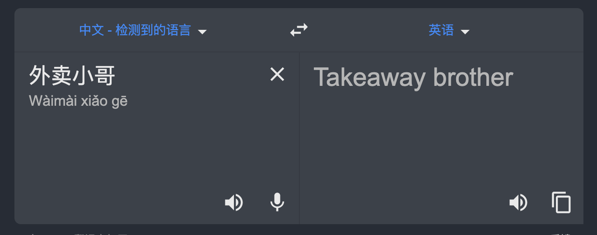

原文连接:https://www.cnblogs.com/kiwifly/p/11826766.html
Step 1. 什么是生产者消费者问题
生产者消费者问题也叫有限缓冲问题，是多线程同步的一个最最最经典的问题。这个问题描述的场景是对于一个有固定大小的缓冲区，同时共享给两个线程去使用。而这两个线程会分为两个角色，一个负责往这个缓冲区里放入一定的数据，我们叫他生产者。另一个负责从缓冲区里取数据，我们叫他消费者。
这里就会有两个问题，第一个问题是生产者不可能无限制的放数据去缓冲区，因为缓冲区是有大小的，当缓冲区满的时候，生产者就必须停止生产。第二个问题亦然，消费者也不可能无限制的从缓冲区去取数据，取数据的前提是缓冲区里有数据，所以当缓冲区空的时候，消费者就必须停止生产。
这两个问题看起来简单，但是在实际编码的时候还是会有许多坑，稍不留意就会铸成大错。而且上面只是单个消费者生产者问题，实现应用中，还会遇到多生产多消费等更复杂的场景。这些问题下面会详细叙述。
Step 2. 为什么会有这个问题
通过上节的内容，我们知道了什么是生产者消费者问题。但是为什么会出现这种问题呢？
其实如果说『生产者消费者问题』，可能因为有了『问题』两个字而显得比较负面。我更喜欢称之为『生产者消费者模式』，就像我们学的那些代码设计模式一样。他其实是多线程情况下的一种设计模式，是某些场景下久经考验的最佳实践。
那么这种模式有哪些作用呢？
他的第一个好处是解耦。
举个外卖的例子。在没有美团、饿了么之前，肯定没有现在这么多满大街跑的外卖小哥。你打电话点了一份外卖，通常都是老板自己做菜自己送。你想像一下，老板洗菜、切菜、做菜，做好之后再打包，然后拎着打包盒，骑个自行车，再满小区找地址，最后送到你的手中。这里就会出现几个问题，第一，老板挺不容易的，要会洗菜、切菜、做菜烹饪一条龙，做好之后，还要会骑车，光会骑车还不行，他还要认路，哪哪小区在哪里，哪哪栋在哪里，从哪走比较近，哪个门口保安不让进。这样就把所有的职能都集中在了老板身上，做饭与送饭，其实是两条事，理论上没有什么联系，但是这里如果老板切菜时，一不小心切到了手，那不光菜做不了，后面也没法送。或者送外卖的路上，为赶时间闯红灯被交警拦了下来，不光饭送不了，还回不来做下一份。这就像我们的代码全都耦合在一起的后果，两个业务相互影响，一个业务出现问题另一个也跟着出现问题，一个业务变更就带着另一个业务变更。
我们想想，有了外卖小哥之后呢？老板只要关注于做菜就好了，做好给到外卖小哥。外卖小哥会送到用户手上。老板想的是怎么把菜做的更好吃，外卖小哥想的是怎么最快送达。职能清晰了，效率就更高了。这里可以把老板当成生产者，对应的外卖小哥就是消费者。
他的第二个好处就是均衡生产者与消费者的能力。
还是举外卖的例子。有些外卖是要实时准备的，比如说做菜就是这样，用户下单后，老板立刻洗菜、切菜、做菜然后打包。对于比较耗时的菜品，比如煲粥、炖汤之类的时间可能很长。而外卖小哥耗费的时间只是接到通知后来到这家店的时间。因为现在的外卖系统比较智能，通知的都是距离商户最近的外卖小哥，所以到店的时间一般比较短。这种场景下瓶颈就是商家的产能，高峰期就可能会造成排队。如下图：

再严重一点就会这样
对于这个问题的原因我们很清楚了，是因为生产者（商家）的产能跟不上消费者（外卖小哥）的消费（送餐）速度。因为我们把职能分开了，所以解决问题也很清晰，那就提高生产者的产能，比如说老板可以多雇几个厨师或者再开一家分店。这样就把生产者的产能提高到与消费者的产能平衡的位置。
还有另一种生产者比消费者快的情况，比如说一些小超市，他也有外卖服务。因为他的东西都是现成的，用户下完单后，只要按订单装好就可以了。这个时候反而是从外边过来的外卖小哥要慢的多。再或者是商品准备的时间很短，但是送餐的路途遥远，路况复杂。所以瓶颈到外卖小哥身上。

这种情况下问题也很清晰了，消费者消耗的速度跟不上生产者的产能，那扩充消费者的数量好了。比如经常遇到的外卖转单，一个外卖小哥来不及了，转给了另一个外卖小哥。同样也能达到生产者与消费者的产能均衡。
Step 3. 怎么去实现生产者消费者模式
好了，说完了 what 还有 why，那么我们现在接着说怎么去实现生产者消费者模式，不再废话直接上代码。
首先我们写一个老板类：
3.1 Boss.java （老板）
/**
* fshows.com
* Copyright (C) 2013-2019 All Rights Reserved.
*/
package cn.coder4j.study.example.thread;
import java.util.LinkedList;
/**
* 老板
* @author buhao
* @version Boss.java, v 0.1 2019-11-09 15:09 buhao
*/
public class Boss implements Runnable {
/**
* 最大生产数量
*/
public static final int MAX_NUM = 5;
/**
* 桌子
*/
private LinkedList<String> tables;
public Boss(LinkedList<String> tables) {
this.tables = tables;
}
@Override
public void run() {
// 注意点1
while (true){
synchronized (this.tables){
// 注意点2
while (tables.size() == MAX_NUM){
System.out.println("通知外卖小哥取餐");
// 注意点3
this.tables.notifyAll();
try {
System.out.println("老板开始休息了");
this.tables.wait();
} catch (InterruptedException e) {
e.printStackTrace();
}
}
String goods = "牛肉面" + tables.size();
System.out.println("老板做了一碗" + goods);
tables.addLast(goods);
}
}
}
}然后我们再写一个外卖小哥类，但是尴尬的是发现不知道外卖小哥英文怎么写，查了一下结果如下

这个 brother 总感觉怪怪的，但是我读书少，他骗我也不知道，就用这个吧。 要是有英语大神可以留言回复一下正确怎么写。
3.2 TakeawayBrother.java （外卖小哥）
/**
* fshows.com
* Copyright (C) 2013-2019 All Rights Reserved.
*/
package cn.coder4j.study.example.thread;
import java.util.LinkedList;
/**
* 外卖小哥
* @author buhao
* @version TakeawayBrother.java, v 0.1 2019-11-09 15:14 buhao
*/
public class TakeawayBrother implements Runnable {
private LinkedList<String> tables;
public TakeawayBrother(LinkedList<String> tables) {
this.tables = tables;
}
@Override
public void run() {
while (true){
synchronized (this.tables){
while (this.tables == null || this.tables.size() == 0){
System.out.println("催老板赶快做外卖");
this.tables.notifyAll();
try {
System.out.println("一边玩手机一边等外卖");
this.tables.wait();
} catch (InterruptedException e) {
e.printStackTrace();
}
}
String goods = tables.removeFirst();
System.out.println("外卖小哥取餐了" + goods);
}
}
}
}事件发生总归有一个地方吧，一般老板把外卖给到外卖小哥都是在店铺里，最后我们再加一个店铺场景类吧
3.3 StoreContext.java （店铺）
/**
* fshows.com
* Copyright (C) 2013-2019 All Rights Reserved.
*/
package cn.coder4j.study.example.thread;
import java.util.LinkedList;
/**
* 店铺场景
* @author buhao
* @version StoreContext.java, v 0.1 2019-11-09 15:28 buhao
*/
public class StoreContext {
public static void main(String[] args) {
// 先创建一张用于存放外卖的桌子
LinkedList<String> tables = new LinkedList<>();
// 再创建一个老板
Boss boss = new Boss(tables);
// 最后创建一个外卖小哥
TakeawayBrother takeawayBrother = new TakeawayBrother(tables);
// 创建线程对象
Thread bossThread = new Thread(boss);
Thread takeawayBrotherThread = new Thread(takeawayBrother);
// 运行线程
bossThread.start();
takeawayBrotherThread.start();
}
}3.4 运行结果
老板做了一碗牛肉面0
老板做了一碗牛肉面1
老板做了一碗牛肉面2
老板做了一碗牛肉面3
老板做了一碗牛肉面4
通知外卖小哥取餐
老板开始休息了
外卖小哥取餐了牛肉面0
外卖小哥取餐了牛肉面1
外卖小哥取餐了牛肉面2
外卖小哥取餐了牛肉面3
外卖小哥取餐了牛肉面4
催老板赶快做外卖
一边玩手机一边等外卖
老板做了一碗牛肉面0
老板做了一碗牛肉面1
老板做了一碗牛肉面2
老板做了一碗牛肉面3
老板做了一碗牛肉面4
通知外卖小哥取餐
老板开始休息了
外卖小哥取餐了牛肉面0
外卖小哥取餐了牛肉面1
外卖小哥取餐了牛肉面2
外卖小哥取餐了牛肉面3
外卖小哥取餐了牛肉面4
催老板赶快做外卖
一边玩手机一边等外卖
..........Step 4. 代码说明
首先上面的代码是一个最基本的单生产单消费的例子。如果你想要多生产多消费，那多创建几个 boss 或者 takeawayBrother 就可以了。
然后店铺场景类没什么可说的，只是基本的创建线程逻辑，如果对于线程创建不了解的，可以参考前文的【并发那些事】创建线程的三种方式。此文不再赘述。另外观察代码，可以发现生产者与消费者的代码极为相似，只是一个存一个取。这里我们以生产者为例子说明。
首先在 Boss 类中他有两个成员属性，一个是 MAX_NUM 一个是 tables。还记得我们在一开头提到的『固定大小的缓冲区』吗？这里的 MAX_NUM 对应的就是『固定大小』这几个字，这里我们设置的是 5 个。他的现实意义就是老板不可能从早到晚一刻不停的做菜，一般是在点单的时候开始做，也有一些在高峰期的时候提前做一点，但是他放菜的桌子只有那么大，放满了就不能接着做。而 tables 就对应着『缓冲区』这几个字。老板做完菜总要有一个地方先放着等外卖小哥来拿吧，缓冲区就是放菜的桌子。
然后我们再接着看代码逻辑，我在代码中标记了几个注意点。
第一个注意点是最外面一层的 while。这个是多线程通用写法，因为不写 while 的话，一次任务结束后代码就退出了。现实业务中我们通常想要业务一直持续的运行，所以加个 while 解决。
第二个注意点 while (tables.size() == MAX_NUM) 。这个信息量相对多一点，首先 while 的判断条件的意思是判断当前桌子上的外卖是不是已经达到上限，如果是会进入 while 代码块的内容，首先通知(notifyAll)外卖小哥可以拿外卖了，然后自己可以歇着了(wait)，否则接着往下走继续做。初次接触生产消费模型的同学，很容易出错的点就是把这里的 while 写成 if。因为这里本身也只是要判断当前缓冲区是否满足生产的条件。其实在语法与逻辑上没有问题，但是在多线程下就会出现 虚假唤醒 的问题。比如现在有两个生产者都处于调用 wait 的地方。突然消费者线程把数据消费完了，并通知了所有生产者去生产，两个生产者都接收到消息，但是只有一个生产者拿到锁，他就去生产了，生产完后，把锁就释放了，刚刚另一个接收到消息的生产者拿到锁就接着往下走，如果这里是 if 的话，因为都已经判断过了，不会再判断，但是明显另一个线程已经完了任务，他现在已经不符合条件。接着往下走就会出现问题。所以当这里换成 while 后，他醒来后还会接着判断一次，不满足就接着等待，这样就避免了虚假唤醒这种问题。
第三个注意点 this.tables.notifyAll()。关于第二个问题，大家可能要说了，出现问题是因为我们同时通知了两个生产者造成的，java 自带了一个唤醒单个线程的 notify 方法为什么不用，反而用唤醒所有线程的 notifyAll 方法。这是因为 notify 唤醒线程是 随机 的，也就是说你唤醒的可能是生产者也可能是消费者。比如说你是生产者，你生产够了，你想唤醒消费者，但是不幸的是你唤醒了另一个生产者，另一个生产者一觉醒来，发现菜都做完了，就接着睡，如果生产者一直唤醒的都是生产者，那么程序就会进入 假死 状态，消费者永远都处于等待状态。
其它
1. 项目代码
因为篇幅有限，无法贴完所有代码，如遇到问题可到github上查看源码。